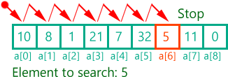

Tìm kiếm
1. Tìm kiếm tuần tự và tìm kiếm nhị phân
1.1 Tìm kiếm tuần tự
Thuật toán tìm kiếm tuần tự được thực hiện từ ý tưởng trực tiếp sau đây: Bắt đầu từ phần tử đầu tiên, duyệt qua từng phần tử cho đến khi tìm được đích hoặc kiết luận không tìm được.
Lưu ý:
- Không đòi hỏi các số được sắp thứ tự
- Làm việc được với cả danh sách liên kết (Linked List)
Thuật toán có độ phức tạp: O(n)
bool LinearSearch(int arr[], int numberOfElements, int key, int& position){
int index;
for (index = 0; index < numberOfElements; ++index){
if(arr[index] == key){
break;
}
}
if(index < numberOfElements){
position = index;
return true;
}
return false;
}
1.2 Tìm kiếm nhị phân
Điều kiện để thực hiện thuật toán tìm kiếm nhị phân là danh sách phải được sắp xếp theo thứ tự không giảm.
Các bước thực hiện:
Bước 1: left=1; right = N; // tìm kiếm trên tất cả các phần tử
Bước 2: mid = (left+right)/2; //lấy mốc so sánh
So sánh a[mid] với x, có 3 khả năng:
+ a[mid] = x: Tìm thấy. Dừng lại.
+ a[mid]>x: // tìm tiếp x trong dãy con a(left)...a(mid-1):
right = mid-1;
+ a[mid] left = mid+1; Bước 3: Nếu left<=right //còn phần tử chưa xét=>tìm tiếp Lặp lại Bước 2 Ngược lại: Dừng; //Đã xét hết phần từ Thuật toán có độ phức tạp: O(log(2)n). Cây nhị phân tìm kiếm là cây nhị phân rỗng hoặc thoả mãn đồng thời các điều kiện sau : So sánh tìm kiếm nhị phân với tìm kiếm thông thường: 2.2.1 Cấu trúc cây: 2.2.2 Thêm một phần tử vào cây: 2.2.3 Nhập cây: 2.2.4 Duyệt cây: 2.2.5 Tìm kiếm node: 2.2.6 Xóa node: Ví dụ xóa node có giá trị 10 trong cây Bổ xung sau Xâu (Strings): Xâu là dãy ký hiệu lấy từ bảng kí hiệu (alphabet) Σ. Kí hiệu T[i .. j] là xâu con của xâu T bắt đầu từ vị trí i đến vị trí j. Trượt (Shifts): Giả sử T1 và T2 là hai xâu, trong đó |T1| = m và |T2| = n. Ta nói T1 xuất hiện nhờ trượt đến s trong T2 nếu: T1[1 .. m] = T2[s+1 .. s+m].
Ý tưởng: Trượt đến từng vị trí s = 0, 1, ... , n - m, với mỗi vị trí kiểm tra xem xâu mẫu có xuất hiện ở vị trí đó hay không. Thời gian tính trong tình huống tồi nhất = O(nm). Thuật toán trực tiếp cải biên Xét ví dụ Nhận thấy rằng b không xuất hiện ở bất cứ đâu trong P vì thế có thể trượt P bỏ qua b. Ví dụ khác Kí hiệu "c" xuất hiện ở vị trí 2 trong P, vì thế có thể trượt P sao cho hai kí hiệu "c" được đóng thẳng. Ký tự tồi: Giả sử P[j] ≠ T[j+s], khi đó ta gọi T[j+s] là ký tự tồi (bad character). Sử dụng ký tự tồi có thể giúp tránh đóng hàng không đúng. Hàm Last: T[j+s] xuất hiện ở vị trí nào trong P? Ta xác định hàm last như sau: Nếu c xuất hiện trong P thì last(c) = chỉ số lớn nhất (bên phải nhất) của vị trí xuất hiện của c trong P ngược lại đặt last(c) = 0. Tăng vị trí dịch chuyển: Giả sử kí tự tồi được đóng ở vị trí j của P. Tình huống 1: - Kí tự tồi có mặt trong P và last(c) < j. - Khi đó có thể trượt đến: s <- s + (j-last(c)). Tình huống 2: - Kí tự tồi có mặt trong P và last(c) > j. - Khi đó: s <- s + 1. Tình huống 3: - Kí tự tồi không có mặt trong P và vì thế last(c) = 0. - Khi đó: s <- s + (j-last(c)) hay s <- s + j. Ví dụ:
Tính last cho mỗi ký hiệu trong bảng kí hiệu Σ = {a, b, c, d}: last(a) = 5, last(c) = 6, last(b) = 4, last(d) = 0. Thời gian tính: - Việc tính hàm last đòi hỏi thời gian O(m + |Σ|). - Tình huống tồi nhất không khác gì thuật toán trực tiếp, nghĩa là đòi hỏi thời gian O(mn + |Σ|). - Ví dụ tính huống tồi nhất xảy ra khi: + Pattern: bam-1 + Text: an - Thuật toán làm việc kém hiệu quả đối với bảng Σ nhỏ.
int BinarySearch(int a[], int N, int x){
int left = 0, right = N - 1;
int mid;
do{
mid = (left + right) / 2;
if (x == a[mid])
return mid; //Thấy x tại mid
else
if (x < a[mid])
right = mid - 1;
else
left = mid + 1;
} while (left <= right);
return -1; // tìm hết dãy mà không có x
}
2. Cây nhị phân tìm kiếm
2.1 Định nghĩa


2.2 Một số thao tác trên cây nhị phân tìm kiếm
typedef int item; //kieu item la kieu nguyen
struct Node
{
item key; //truong key cua du lieu
Node *Left, *Right; //con trai va con phai
};
typedef Node *Tree; //cay

int insertNode(Tree &T, item x) // chen 1 Node vao cay
{
if (T != NULL){
if (T->key == x) return -1; // Node nay da co
if (T->key > x) return insertNode(T->Left, x); // chen vao Node trai
else if (T->key < x) return insertNode(T->Right, x); // chen vao Node phai
}
T = (Node *) malloc(sizeof(Node));
if (T == NULL) return 0; // khong du bo nho
T->key = x;
T->Left = T->Right = NULL;
return 1; // ok
}
void CreateTree(Tree &T){ // nhap cay
int x;
while (1){
printf("Nhap vao Node: ");
scanf("%d", &x);
if (x == 0) break; // x = 0 thi thoat
int check = insertNode(T, x);
if (check == -1) printf("Node da ton tai!");
else if (check == 0) printf("Khong du bo nho");
}
}
void LNR(Tree T){
if(T!=NULL){
LNR(T->Left);
printf("%d ",T->key);
LNR(T->Right);
}
}
Node* searchKey(Tree T, item x){ // tim nut co key x
if (T!=NULL){
if (T->key == x) { Node *P = T; return P;}
if (T->key > x) return searchKey(T->Left, x);
if (T->key < x) return searchKey(T->Right, x);
}
return NULL;
}
int delKey(Tree &T, item x) // xoa nut co key x
{
if (T==NULL) return 0;
else if (T->key > x) return delKey(T->Left, x);
else if (T->key < x) return delKey(T->Right, x);
else // T->key == x
{
Node *P = T;
if (T->Left == NULL) T = T->Right; // Node chi co cay con phai
else if (T->Right == NULL) T = T->Left; // Node chi co cay con trai
else // Node co ca 2 con
{
Node *S = T, *Q = S->Left;
// S la cha cua Q, Q la Node phai nhat cua cay con trai cua P
while (Q->Right != NULL)
{
S = Q;
Q = Q->Right;
}
P->key = Q->key;
S->Right = Q->Left;
delete Q;
}
}
return 1;
}
2.3 Chương trình minh họa
Bấm vào đây để xem chương trình hoàn chỉnh
3. Cây nhị phân tìm kiếm cân bằng
4. Tìm kiếm xâu mẫu
4.1 Thuật toán trực tiếp
//Source: Cấu trúc dữ liệu và giải thuật - Nguyễn Đức Nghĩa
void NaiveSM(char* T, int m, char* T, int n){
int i, j;
/* Searching */
for(j = 0; i < n-m; j++){
for (i = 0; i< m && P[i] == T[i+j]; i++);
if (i >= m) OUTPUT(j);
}
}
4.2 Thuật toán Boyer-Moore
for s <- 0 to n-m do
j <- m
while j > 0 and T[j+s] = P[j] do
j <- j - 1
if j = 0 then
print "Là vị trí khớp"
a c a
<- j+s
a a b a c a a b a
a c b a b
<- j+s
a a b c b a a b a
a c b a b
<- j+s
b a c a b c b a a b a
//Boyer-Moore Algorithm
s <- 0
while s <= n-m do
j <- m
while j > 0 and T[j+s] = P[j] do
j <- j - 1;
if j = 0
print "Là vị trí khớp"
s <- s + 1
else
k <- last (T[j+s])
s <- s + max(j-k, 1)
text
a c a b a c
a a b a c b d c a a c a a c a b a c
Bấm vào đây để xem chương trình hoàn chỉnh